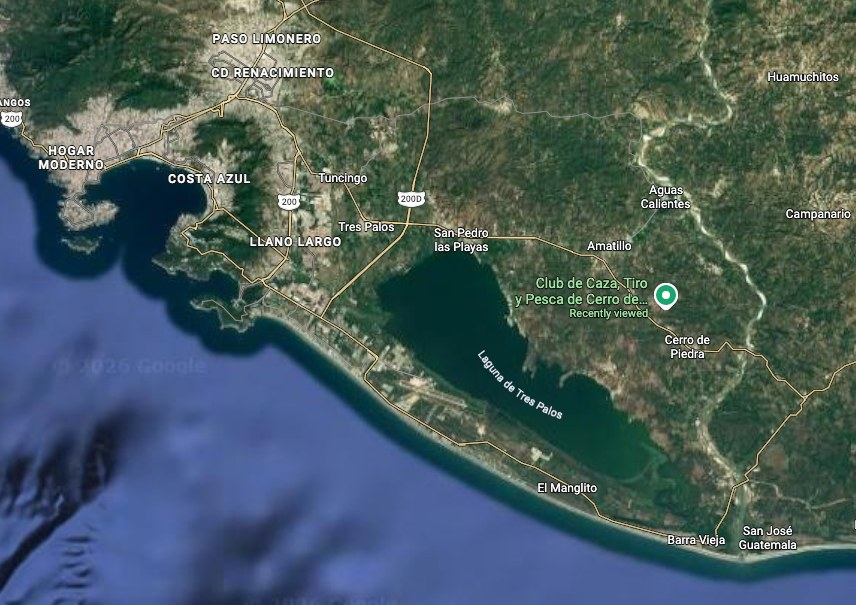
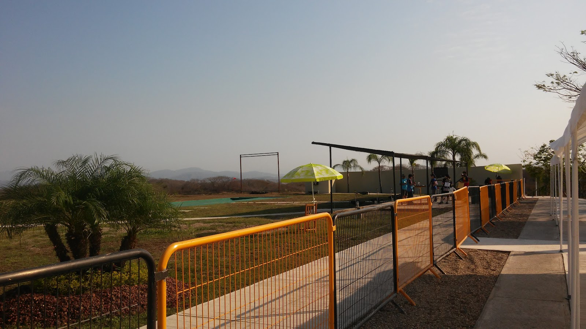

Sede y campo de tiroVenue & shooting range
Club Caza, Tiro y Pesca de Acapulco, Guerrero.Club Caza, Tiro y Pesca de Acapulco, Guerrero.

UbicaciónLocation
📷 Foto de la bahíaBay photo
Club sedeHost club
- NombreName
- Club Caza, Tiro y Pesca de Acapulco
- DirecciónAddress
- Por confirmarTBC EjemploExample
- CanchasRanges
- Número de canchas trap/skeet y de finales por confirmarNumber of trap/skeet and finals ranges TBC EjemploExample
- ServiciosServices
- Armería, área de gazebos, comedor, área médica — por confirmarArmory, gazebo area, dining, medical — TBC EjemploExample
Cómo llegarGetting there
- ✈️ Aeropuerto Internacional de Acapulco (ACA).Acapulco International Airport (ACA). Distancia y tiempo al campo: por confirmar.Distance and time to range: TBC.
- 🚌 Traslados oficiales hotel–campo de tiro: verOfficial hotel–range shuttles: see LogísticaLogistics.
- 🌡️ Clima en marzo: dato por agregar con fuente.March weather: data to be added with a source.
Acapulco se reconstruye tras el huracán Otis (octubre de 2023). La Copa 2027 es una vitrina de su resiliencia.Acapulco is rebuilding after Hurricane Otis (October 2023). The 2027 World Cup showcases its resilience.